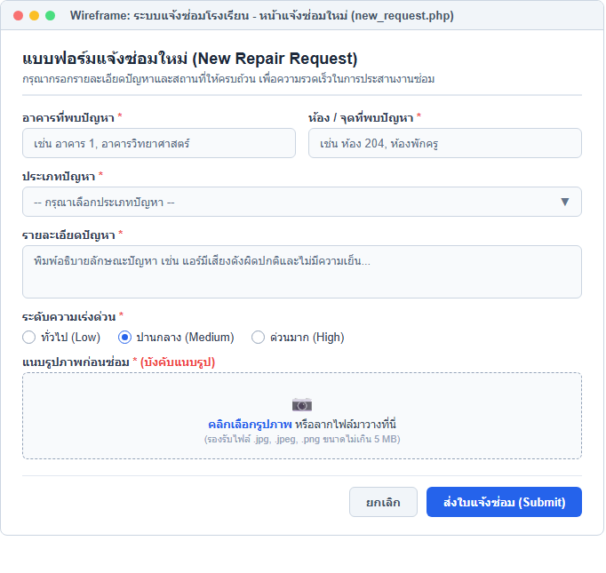

รายวิชา: การพัฒนาเว็บแอปพลิเคชัน (Web Application Development)
ชื่อ-นามสกุล: นายสราวุฒิ อุยยาหาญ รหัสนักศึกษา: 674230027 กลุ่ม: 67/44
วันที่ส่ง: 22/9/2569 คะแนน: .........../100
ในโรงเรียนมีปัญหาเกี่ยวกับการแจ้งซ่อมอุปกรณ์ต่างๆ เช่น:
ระบบนี้จะช่วย: รวบรวมงานซ่อมไว้ในที่เดียว ตั้งแต่แจ้งปัญหา มอบหมายเจ้าหน้าที่ ติดตามความคืบหน้า ไปจนถึงบันทึกผลการซ่อม พร้อมประวัติให้ตรวจสอบย้อนหลัง
จงระบุ User Roles ทั้ง 3 ประเภท และอธิบายสิทธิ์การเข้าถึงข้อมูลของแต่ละบทบาท
ระบบแจ้งซ่อมแบ่งบทบาทผู้ใช้งาน (User Roles) ออกเป็น 3 บทบาทหลัก ดังนี้:
จงสกัดคำนาม (Noun Extraction) จากโจทย์ความต้องการด้านบน เพื่อระบุคลาสที่ควรสร้างในระบบ (เช่น RepairRequest, User, Comment) และคำนามที่ไม่ควรสร้างเป็นคลาส พร้อมอธิบายเหตุผล
1. คำนามที่ควรสร้างเป็นคลาส (Classes):
2. คำนามที่ไม่ควรสร้างเป็นคลาส พร้อมเหตุผล:
ENUM หรือ Attribute ภายใน RepairRequest มากกว่าสร้างเป็นคลาสแยกจงเขียน SQL CREATE TABLE สำหรับตาราง repair_requests พร้อมกำหนด Foreign Key Constraints
CREATE TABLE repair_requests (
id INT AUTO_INCREMENT PRIMARY KEY,
request_no VARCHAR(20) NOT NULL UNIQUE,
user_id INT NOT NULL,
building VARCHAR(100) NOT NULL,
room VARCHAR(50) NOT NULL,
problem_type ENUM('electrical', 'furniture', 'computer', 'aircon', 'other') NOT NULL,
description TEXT NOT NULL,
urgency ENUM('low', 'medium', 'high') DEFAULT 'medium',
status ENUM('pending', 'accepted', 'in_progress', 'completed') DEFAULT 'pending',
assigned_to INT NULL,
due_date DATE NULL,
completion_date DATE NULL,
cost DECIMAL(10, 2) NULL,
result TEXT NULL,
created_at TIMESTAMP DEFAULT CURRENT_TIMESTAMP,
FOREIGN KEY (user_id) REFERENCES users(id) ON DELETE CASCADE,
FOREIGN KEY (assigned_to) REFERENCES users(id) ON DELETE SET NULL
);
คำอธิบาย Foreign Key Constraints:
FOREIGN KEY (user_id) REFERENCES users(id) ON DELETE CASCADE: ผูกผู้แจ้งเข้ากับตาราง users หากผู้ใช้ถูกลบ ใบแจ้งซ่อมของผู้ใช้นั้นจะถูกลบตามไปด้วยโดยอัตโนมัติ เพื่อป้องกันข้อมูลกำพร้าFOREIGN KEY (assigned_to) REFERENCES users(id) ON DELETE SET NULL: ผูกช่างผู้รับผิดชอบ หากบัญชีช่างซ่อมถูกลบออกจากระบบ ใบแจ้งซ่อมจะยังคงอยู่ แต่ฟิลด์ assigned_to จะถูกปรับค่าเป็น NULL เพื่อให้แอดมินสามารถมอบหมายงานให้ช่างคนอื่นต่อได้จงอธิบายความสัมพันธ์ (Relationships) ระหว่างตารางต่างๆ พร้อมระบุ Cardinality (1:1, 1:N, M:N) และอธิบายว่าเหตุใดจึงแยกตาราง repair_images ออกจาก repair_requests
1. ความสัมพันธ์ระหว่างตาราง (Relationships & Cardinality):
user_id)assigned_to)repair_id)repair_id)user_id)2. เหตุผลที่ต้องแยกตาราง repair_images ออกจาก repair_requests:
img1, img2, img3 ซึ่งจำกัดจำนวนรูป และหากไม่มีรูปก็จะสิ้นเปลืองพื้นที่จัดเก็บค่า NULLimage_type ('before' หรือ 'after') และสามารถเพิ่มหรือลบรูปภาพได้อย่างอิสระจากโค้ดข้างต้น จงอธิบายว่าหลักการ Encapsulation ถูกนำมาใช้อย่างไร และเหตุใดจึงใช้ ?int และ ?string (Nullable Types)
1. การนำหลักการ Encapsulation (การห่อหุ้มข้อมูล) มาใช้:
private เช่น private string $status; หรือ private ?float $cost; เพื่อป้องกันไม่ให้โค้ดภายนอกเข้าถึงหรือแก้ไขค่าได้โดยตรงgetId(), getStatus()assignTo(), startRepair(), completeRepair() โดยมีเงื่อนไขตรวจสอบความถูกต้องก่อนปรับเปลี่ยนค่า เพื่อรักษาความคงเส้นคงวาและความถูกต้องของข้อมูล (Data Integrity)2. เหตุผลที่ใช้ ?int และ ?string (Nullable Types ใน PHP 8):
?) หน้า Type หมายถึง ตัวแปรนั้นสามารถเก็บค่าตาม Type นั้นๆ หรือสามารถเป็นค่า null ก็ได้?int $assignedTo: ตอนแจ้งซ่อมยังไม่มีการมอบหมายช่าง ค่าจึงต้องเป็น null?string $dueDate: ยังไม่ได้ระบุวันแล้วเสร็จจนกว่าแอดมินจะกดมอบหมายงาน?float $cost: ค่าใช้จ่ายยังไม่ทราบแน่ชัดจนกว่าช่างจะซ่อมเสร็จสิ้นจงเขียน PHP Function สำหรับสร้างรหัสใบแจ้งซ่อมอัตโนมัติ (Format: RP-YYYYMM-XXX เช่น RP-202401-001)
function generateRequestNo(PDO $conn): string {
// 1. ดึงปีและเดือนปัจจุบันในรูปแบบ YYYYMM เช่น 202609
$yearMonth = date("Ym");
$prefix = "RP-" . $yearMonth . "-";
// 2. ค้นหารหัสแจ้งซ่อมล่าสุดของเดือนนี้จากฐานข้อมูล
$query = "SELECT request_no FROM repair_requests
WHERE request_no LIKE :prefix
ORDER BY request_no DESC LIMIT 1";
$stmt = $conn->prepare($query);
$searchPrefix = $prefix . "%";
$stmt->bindParam(':prefix', $searchPrefix);
$stmt->execute();
// 3. ตรวจสอบว่าในเดือนนี้มีรายการแจ้งซ่อมแล้วหรือไม่
if ($stmt->rowCount() > 0) {
$row = $stmt->fetch(PDO::FETCH_ASSOC);
// แยกสตริงด้วยเครื่องหมาย '-' แล้วเอาตัวเลข 3 หลักท้ายมาเพิ่มค่า 1
$parts = explode("-", $row['request_no']);
$last_num = (int)end($parts);
$new_num = $last_num + 1;
// จัดรูปแบบเป็นตัวเลข 3 หลัก เช่น 002, 015 ด้วย sprintf
return sprintf("%s%03d", $prefix, $new_num);
} else {
// หากเป็นรายการแรกของเดือน เริ่มต้นที่ 001
return sprintf("%s%03d", $prefix, 1);
}
}
คำอธิบายการทำงาน: ฟังก์ชันจะอ่านปี-เดือนปัจจุบัน หากขึ้นเดือนใหม่จะรีเซ็ตเลขลำดับกลับไปเริ่มต้นที่ 001 แต่หากอยู่ในเดือนเดียวกันจะนำเลขลำดับล่าสุดมา +1 และเติมเลขศูนย์ด้านหน้าให้ครบ 3 หลักเสมอ
จงอธิบาย State Transition ของ status ในคลาส RepairRequest ว่าเปลี่ยนจาก pending → accepted → in_progress → completed ได้อย่างไร และเหตุใดจึงต้องมีเงื่อนไขตรวจสอบใน method startRepair()
1. วงจรการเปลี่ยนสถานะ (State Transition):
assignTo($technicianId, $dueDate) เพื่อมอบหมายช่างและกำหนดวันเสร็จสิ้นstartRepair()completeRepair($cost, $result) พร้อมบันทึกสรุปค่าใช้จ่ายและรายละเอียดการแก้ไข2. เหตุใดจึงต้องมีเงื่อนไขตรวจสอบใน method startRepair():
if ($this->status !== 'accepted') {
throw new Exception('Cannot start repair: Request not accepted yet');
}
pending (ยังไม่ได้รับเรื่องหรือยังไม่ได้มอบหมายงานให้ช่างอย่างเป็นทางการ)| หน้าจอ | ผู้ใช้ที่เข้าถึงได้ | ฟังก์ชันหลัก |
|---|---|---|
| Dashboard | ทุกบทบาท | สรุปสถิติ, งานที่รับผิดชอบ |
| แจ้งซ่อมใหม่ | ครู/บุคลากร | กรอกข้อมูล, แนบรูปภาพ |
| รายการแจ้งซ่อม | ทุกบทบาท | ดูรายการ, ค้นหา, กรอง |
| รายละเอียดใบแจ้งซ่อม | ทุกบทบาท | ดูข้อมูล, เพิ่มความคิดเห็น, อัปเดตสถานะ |
| จัดการผู้ใช้ | ผู้ดูแลเท่านั้น | เพิ่ม/แก้ไข/ลบผู้ใช้ |
จงออกแบบ Wireframe ของหน้า "แจ้งซ่อมใหม่" โดยระบุองค์ประกอบหลัก (Form Fields, Buttons, Validation)
1. ภาพแบบร่างหน้าจอ (UI Wireframe):

2. องค์ประกอบหลักในแบบฟอร์ม (Form Fields & Buttons):
3. การตรวจสอบความถูกต้องของข้อมูล (Validation):
required กำหนดให้ต้องกรอกข้อมูลทุกช่อง และเขียน JavaScript เช็คนามสกุลไฟล์รูปภาพ (เฉพาะ .jpg, .jpeg, .png) พร้อมเช็คขนาดไฟล์ไม่เกิน 5 MBสร้างระบบ Login พร้อม Session Management และตรวจสอบสิทธิ์การเข้าถึงหน้าต่างๆ
1. โค้ดประมวลผลการเข้าสู่ระบบและบันทึก Session (ไฟล์ index.php):
<?php
session_start();
require_once 'config/database.php';
require_once 'classes/User.php';
// หากมีการ Login ค้างไว้อยู่แล้ว ให้ข้ามไปหน้า Dashboard ทันที
if (isset($_SESSION['user_id'])) {
header("Location: dashboard.php");
exit();
}
if ($_SERVER["REQUEST_METHOD"] == "POST") {
$username = trim($_POST['username'] ?? '');
$password = trim($_POST['password'] ?? '');
$db = new Database();
$conn = $db->getConnection();
$user = new User($conn);
// เมธอด login() ตรวจสอบรหัสผ่านด้วย password_verify()
if ($user->login($username, $password)) {
// บันทึกข้อมูลลงใน Session เพื่อใช้ระบุตัวตนและตรวจสอบสิทธิ์
$_SESSION['user_id'] = $user->id;
$_SESSION['role'] = $user->role;
$_SESSION['fullname'] = $user->fullname;
header("Location: dashboard.php");
exit();
} else {
$error_msg = "ชื่อผู้ใช้หรือรหัสผ่านไม่ถูกต้อง";
}
}
?>
2. โค้ดตรวจสอบสิทธิ์การเข้าถึงหน้าต่างๆ (Protected Pages):
<?php
session_start();
// 1. ตรวจสอบว่าผู้ใช้ผ่านการ Login หรือไม่ ถ้ายังให้ Redirect ไปหน้า Login
if (!isset($_SESSION['user_id'])) {
header("Location: index.php");
exit();
}
// 2. ตรวจสอบสิทธิ์เฉพาะบทบาท (Role-based Authorization)
// ตัวอย่าง: ตรวจสอบสิทธิ์เฉพาะผู้ดูแลระบบ (Admin)
if ($_SESSION['role'] !== 'admin') {
die("ขออภัย คุณไม่มีสิทธิ์เข้าถึงหน้านี้");
}
?>
คำอธิบาย: ใช้ฟังก์ชัน session_start() ในการจัดเก็บข้อมูล Session ฝั่งเซิร์ฟเวอร์ โดยรหัสผ่านผ่านการตรวจสอบอย่างปลอดภัย และทุกหน้าที่ต้องจำกัดสิทธิ์จะมีการตรวจเช็ค $_SESSION['user_id'] และ $_SESSION['role'] ที่ส่วนบนสุดของไฟล์เสมอ
สร้างหน้า Dashboard แสดงสถิติ: จำนวนงานทั้งหมด, งานที่รอดำเนินการ, งานที่กำลังดำเนินการ, งานที่เสร็จแล้ว
1. เมธอดดึงข้อมูลสถิติด้วย SQL (ในคลาส RepairRequest.php):
public function getStats() {
$query = "SELECT
COUNT(*) as total,
SUM(CASE WHEN status = 'pending' THEN 1 ELSE 0 END) as pending,
SUM(CASE WHEN status = 'in_progress' THEN 1 ELSE 0 END) as in_progress,
SUM(CASE WHEN status = 'completed' THEN 1 ELSE 0 END) as completed
FROM " . $this->table_name;
$stmt = $this->conn->prepare($query);
$stmt->execute();
return $stmt->fetch(PDO::FETCH_ASSOC);
}
2. โค้ดแสดงผลเป็นการ์ดสรุปสถิติบน Dashboard (ในไฟล์ dashboard.php):
<?php
$stats = $repair->getStats();
?>
<div class="stats-grid">
<div class="stat-card primary">
<div class="stat-value"><?= $stats['total'] ?></div>
<div class="stat-label">งานทั้งหมด</div>
</div>
<div class="stat-card warning">
<div class="stat-value"><?= $stats['pending'] ?></div>
<div class="stat-label">รอดำเนินการ</div>
</div>
<div class="stat-card info">
<div class="stat-value"><?= $stats['in_progress'] ?></div>
<div class="stat-label">กำลังซ่อม</div>
</div>
<div class="stat-card success">
<div class="stat-value"><?= $stats['completed'] ?></div>
<div class="stat-label">เสร็จสิ้น</div>
</div>
</div>
คำอธิบาย: ใช้คำสั่ง SQL COUNT(*) ร่วมกับ SUM(CASE WHEN ...) ช่วยให้นับจำนวนงานแยกตามสถานะต่างๆ ได้ครบถ้วนในคำสั่ง Query เพียงรอบเดียว ทำให้ระบบโหลดหน้า Dashboard ได้รวดเร็วและใช้ทรัพยากรน้อย
สร้างระบบอัปโหลดรูปภาพ ก่อน-หลังซ่อม พร้อมแสดงรูปภาพในหน้ารายละเอียด
1. โค้ดบันทึกและอัปโหลดไฟล์รูปภาพ (ฝั่งเซิร์ฟเวอร์ PHP):
// ตรวจสอบว่ามีการแนบไฟล์และไม่มี error
if (isset($_FILES['repair_image']) && $_FILES['repair_image']['error'] == 0) {
$targetDir = "uploads/";
if (!is_dir($targetDir)) mkdir($targetDir, 0777, true);
// สุ่มชื่อไฟล์ใหม่ด้วย uniqid() ป้องกันชื่อไฟล์ซ้ำกัน
$fileName = uniqid() . "_" . basename($_FILES["repair_image"]["name"]);
$targetFilePath = $targetDir . $fileName;
// ย้ายไฟล์ชั่วคราว (tmp) ไปยังโฟลเดอร์ uploads/
if (move_uploaded_file($_FILES["repair_image"]["tmp_name"], $targetFilePath)) {
// บันทึก path รูปภาพลงในตาราง repair_images โดยระบุชนิด ('before' หรือ 'after')
$stmt = $conn->prepare("INSERT INTO repair_images (repair_id, image_type, image_path) VALUES (?, 'before', ?)");
$stmt->execute([$repair_id, $targetFilePath]);
}
}
2. โค้ดดึงรูปภาพและแสดงผลในหน้ารายละเอียด (ไฟล์ request_detail.php):
<?php
// ดึงข้อมูลรูปภาพทั้งหมดที่ผูกกับใบแจ้งซ่อมนี้
$imagesData = $repair->getImages($id);
$images = ['before' => [], 'after' => []];
while ($img = $imagesData->fetch(PDO::FETCH_ASSOC)) {
$images[$img['image_type']][] = $img['image_path'];
}
?>
<!-- แสดงภาพถ่ายก่อนซ่อม -->
<strong>รูปภาพก่อนซ่อม:</strong>
<div class="image-gallery">
<?php foreach($images['before'] as $imgPath): ?>
<img src="<?= htmlspecialchars($imgPath) ?>" alt="รูปก่อนซ่อม">
<?php endforeach; ?>
</div>
คำอธิบาย: ระบบใช้ move_uploaded_file() ย้ายไฟล์ที่ปลอดภัย พร้อมตั้งชื่อใหม่ด้วย uniqid() และแยกเก็บความสัมพันธ์ลงในตาราง repair_images ทำให้สามารถรองรับได้ทั้งรูปก่อนซ่อม ('before') และรูปหลังซ่อม ('after')
สร้างระบบแจ้งเตือน ด้วย SweetAlert2 เมื่อ:
• แจ้งซ่อมสำเร็จ
• มอบหมายงานสำเร็จ
• อัปเดตสถานะสำเร็จ
1. นำเข้า SweetAlert2 CDN ในส่วน <head>:
<script src="https://cdn.jsdelivr.net/npm/sweetalert2@11"></script>
2. โค้ด JavaScript เชื่อมต่อค่าสถานะจาก PHP เพื่อแสดงแจ้งเตือน (Modal Alert):
<script>
<?php if(!empty($message)): ?>
Swal.fire({
icon: '<?= $messageType ?>', // 'success', 'warning', 'error'
title: '<?= $messageType == "success" ? "สำเร็จ!" : "แจ้งเตือน" ?>',
text: '<?= $message ?>',
confirmButtonColor: '#4f46e5',
confirmButtonText: 'ตกลง'
}).then((result) => {
<?php if($messageType == 'success'): ?>
// เมื่อกดตกลง ให้เปลี่ยนหน้าอัตโนมัติ เช่น กลับไปหน้า Dashboard
window.location.href = 'dashboard.php';
<?php endif; ?>
});
<?php endif; ?>
</script>
3. การกำหนดข้อความตอบกลับในฝั่ง PHP:
$message = "บันทึกใบแจ้งซ่อมและอัปโหลดรูปภาพสำเร็จ"; $messageType = "success";$message = "มอบหมายงานสำเร็จ"; $messageType = "success";$message = "เริ่มดำเนินการซ่อมแซมแล้ว"; หรือ $message = "บันทึกผลการซ่อมสำเร็จ"; $messageType = "success";สร้างระบบส่งออกข้อมูล เป็นไฟล์ CSV และสร้างฟังก์ชันพิมพ์ใบแจ้งซ่อมเป็น PDF
1. ระบบส่งออกข้อมูลรายงานเป็นไฟล์ CSV (ไฟล์ export_csv.php):
<?php
session_start();
require_once 'config/database.php';
require_once 'classes/RepairRequest.php';
// ตรวจสอบสิทธิ์ผู้ใช้
if (!isset($_SESSION['user_id'])) {
header("Location: index.php");
exit();
}
$db = new Database();
$repair = new RepairRequest($db->getConnection());
$requests = $repair->readAll();
// ตั้งค่า Header สำหรับดาวน์โหลดไฟล์ CSV
header('Content-Type: text/csv; charset=utf-8');
header('Content-Disposition: attachment; filename=repair_requests_' . date('Ymd') . '.csv');
// ใส่ UTF-8 BOM (\xEF\xBB\xBF) ป้องกันปัญหาเปิดใน MS Excel แล้วภาษาไทยอ่านไม่ออก
echo "\xEF\xBB\xBF";
$output = fopen('php://output', 'w');
// เขียนแถวหัวตาราง
fputcsv($output, ['รหัสแจ้งซ่อม', 'อาคาร', 'ห้อง', 'ประเภทปัญหา', 'รายละเอียด', 'ความเร่งด่วน', 'สถานะ', 'ผู้แจ้ง', 'วันที่แจ้ง', 'ช่างที่รับผิดชอบ', 'วันที่เสร็จสิ้น', 'ค่าใช้จ่าย (บาท)', 'ผลการซ่อม']);
// วนลูปเขียนข้อมูลแต่ละแถว
while ($row = $requests->fetch(PDO::FETCH_ASSOC)) {
fputcsv($output, [
$row['request_no'],
$row['building'],
$row['room'],
$row['problem_type'],
$row['description'],
$row['urgency'],
$row['status'],
$row['requester_name'],
$row['created_at'],
!empty($row['technician_name']) ? $row['technician_name'] : 'ยังไม่ระบุ',
!empty($row['completion_date']) ? $row['completion_date'] : '-',
isset($row['cost']) && $row['cost'] !== null ? number_format($row['cost'], 2) : '-',
!empty($row['result']) ? $row['result'] : '-'
]);
}
fclose($output);
exit();
?>
2. ฟังก์ชันพิมพ์ใบแจ้งซ่อมเป็น PDF (ผ่าน CSS Print Preview & Browser Print):
<!-- CSS ซ่อนส่วนที่ไม่ต้องการพิมพ์ เช่น เมนูและปุ่มสั่งการ -->
<style>
@media print {
.no-print { display: none !important; }
body { padding: 0; background: white; }
.container { box-shadow: none; border: none; max-width: 100%; }
}
</style>
<!-- ปุ่มสั่งพิมพ์ใบงาน (ผู้ใช้เลือกบันทึกเป็น 'Save as PDF' ได้ทันที) -->
<button onclick="window.print()" class="btn btn-secondary no-print">🖨️ พิมพ์/PDF</button>
คำอธิบาย: การส่งออก CSV ใช้ fputcsv() พร้อมใส่ Byte Order Mark (BOM) เพื่อให้รองรับภาษาไทยใน Microsoft Excel และการพิมพ์ PDF ใช้เทคนิค CSS @media print ร่วมกับ window.print() ทำให้ได้เอกสารขนาดพอดี A4 โดยไม่ต้องพึ่งพา Library เพิ่มเติม
รวมคำถามที่นักศึกษามักสงสัยในการวิเคราะห์และออกแบบระบบแจ้งซ่อมโรงเรียน พร้อมแนวคำตอบเพื่อทบทวนความเข้าใจ
status และ problem_type ในฐานข้อมูล?ENUM มีข้อดีหลายประการ:
WHERE status = 'pending' ไม่ต้องกลัว typorepair_images ออกจาก repair_requests? เก็บเป็น path ในตารางหลักเลยไม่ได้หรือ?SELECT * FROM repair_images WHERE repair_id = ?image1, image2, image3... ซึ่งไม่ยืดหยุ่นและเสียพื้นที่?int และ ?string มันคืออะไร?int (หรือ string) หรือ ค่า null ก็ได้ มักใช้กับ Attribute ที่ "อาจจะยังไม่มีค่า" ในช่วงแรก เช่น:
$assignedTo - เจ้าหน้าที่ที่ยังไม่ถูกมอบหมายงาน$dueDate - วันเสร็จที่ยังไม่ได้กำหนด$cost - ค่าใช้จ่ายที่ยังไม่ทราบจนกว่าจะซ่อมเสร็จmime_content_type() หรือ finfo_file() ไม่ใช่แค่ $_FILES['file']['type'] (ปลอมแปลงได้).htaccess ป้องกันการ execute ไฟล์ PHP ที่อัปโหลดเข้ามา.jpg, .jpeg, .png, .gifalert() หรือ confirm() ของ JavaScript?async/await ได้ ทำให้จัดการ Flow ง่ายalert() ดั้งเดิมจะ block thread และดูเก่า@media print แยกสำหรับพิมพ์ แล้วใช้ window.print() (ผู้ใช้เลือก "Save as PDF" ใน Print Dialog)Dompdf หรือ TCPDF แปลง HTML เป็น PDF ฝั่ง Server (เหมาะสำหรับส่งอีเมลแนบ PDF)html2pdf.js หรือ jsPDF แปลงฝั่ง Clientหากนักศึกษามีข้อสงสัย หรือต้องการคำอธิบายเพิ่มเติมในประเด็นใด สามารถบันทึกไว้ที่นี่เพื่อสอบถามผู้สอนในคาบปฏิบัติได้
ประเด็นที่สงสัย (เช่น เรื่อง Database Design, SQL, Normalization):
คำถาม / ข้อสงสัย: ในการออกแบบ Foreign Key ของตาราง repair_requests เหตุใดคอลัมน์ assigned_to จึงเลือกใช้ ON DELETE SET NULL ในขณะที่ user_id ใช้ ON DELETE CASCADE?
สิ่งที่เข้าใจและได้เรียนรู้: เพราะว่าความสำคัญของข้อมูลต่างกันครับ ในกรณีที่บัญชีช่างซ่อมถูกลบออกจากระบบ เรายังจำเป็นต้องเก็บประวัติใบแจ้งซ่อมนั้นไว้ตรวจสอบย้อนหลัง จึงปรับค่าผู้รับผิดชอบเป็น NULL เพื่อให้แอดมินมอบหมายช่างคนอื่นแทนได้ แต่กรณีของ user_id ถ้าบัญชีผู้แจ้งถูกลบ ข้อมูลงานแจ้งซ่อมที่เขาสร้างก็จะถูกลบตามไปด้วยเพื่อป้องกันปัญหาข้อมูลกำพร้าในระบบ
ประเด็นที่สงสัย (เช่น เรื่อง PHP OOP, Session, Security):
คำถาม / ข้อสงสัย: ทำไมในระบบจริงปัจจุบันจึงไม่แนะนำให้ใช้ฟังก์ชัน md5() หรือ sha1() ในการแฮชรหัสผ่าน และ PHP 8 แนะนำให้จัดการรหัสผ่านอย่างไร?
สิ่งที่เข้าใจและได้เรียนรู้: md5() และ sha1() เป็นขั้นตอนวิธีที่ทำงานเร็วเกินไป และไม่มีกลไก Salt แบบสุ่ม ทำให้เสี่ยงต่อการถูกถอดรหัสผ่าน Rainbow Table หรือ Brute-force Attack ได้ง่ายมาก ใน PHP 8 จึงกำหนดให้ใช้ password_hash($password, PASSWORD_DEFAULT) สำหรับเข้ารหัส และใช้ password_verify($password, $hash) ในการตรวจสอบ ซึ่งใช้เทคนิค Bcrypt/Argon2 ที่มีความปลอดภัยสูงและเพิ่ม Salt สุ่มให้โดยอัตโนมัติ
ประเด็นที่สงสัย (เช่น เรื่อง File Upload, SweetAlert2, PDF Export, UI/UX):
คำถาม / ข้อสงสัย: ทำไมการสั่งพิมพ์หรือบันทึกเป็น PDF ด้วยเทคนิค CSS @media print ร่วมกับคำสั่ง window.print() จึงเป็นที่นิยมและเหมาะสมกับงานนี้มากกว่าการใช้ PHP Library อย่าง Dompdf หรือ TCPDF?
สิ่งที่เข้าใจและได้เรียนรู้: เพราะการใช้ @media print ทำงานบนเว็บเบราว์เซอร์ของผู้ใช้โดยตรง ทำให้เรนเดอร์ฟอนต์ภาษาไทย (เช่น Sarabun) และจัดรูปแบบ CSS ได้สวยงามคมชัด ไม่เจอปัญหาฟอนต์ไทยกลายเป็นสี่เหลี่ยมหรือวรรณยุกต์จมลอยเหมือน Library ฝั่งเซิร์ฟเวอร์ อีกทั้งยังไม่ต้องติดตั้ง Composer Package เพิ่มเติม และประหยัดทรัพยากรการประมวลผลของ Web Server อีกด้วยครับ
| เกณฑ์การให้คะแนน | คะแนน | รายละเอียด |
|---|---|---|
| การวิเคราะห์ความต้องการ | 15 | ระบุ User Roles, Use Cases, Noun Extraction ได้ถูกต้อง |
| การออกแบบฐานข้อมูล | 20 | Schema design, Relationships, Normalization, SQL |
| การพัฒนา PHP (Backend) | 25 | OOP, Security, Error Handling, State Management |
| การออกแบบ UI/UX | 15 | Usability, Responsive Design, Wireframe |
| ฟังก์ชันครบถ้วน | 20 | ทำงานได้ครบตามข้อกำหนด (Login, Upload, SweetAlert2) |
| เอกสารประกอบ | 5 | README.md, Code Comments, Screenshots |
| รวม | 100 |
💡 คำแนะนำ: ใช้ PHP 8+, MySQL 5.7+, และ SweetAlert2 สำหรับ UI Components
📚 เอกสารอ้างอิง: PHP Manual, MySQL Documentation, SweetAlert2 Docs